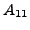
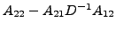
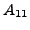
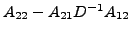
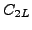
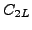

In this talk we consider the inheritance of different types of spectral equivalence in algebraic multilevel methods.
In detail we obtain a two level preconditioner
Here  and
and  are approximations of  and
 respectively.
are approximations of  and
 respectively.
In the talk we assume that  and
and  have some spectral property
related to and
respectively and show
that  defined by (
have some spectral property
related to and
respectively and show
that  defined by ( ) has the same property related
to
) has the same property related
to  .
.
This leads also to new condition number bounds for two level methods applied as preconditioner.
These can be used to obtain new bounds for the multilevel preconditioner and the so called AMLI preconditioner
At the end of the talk we will see that for specific C.B.S. constants the new bounds improve well-known bounds.